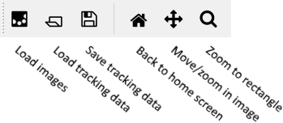

OrganoidTracker manual
Welcome to the OrganoidTracker manual! This manual will tell you how to do manual and automated tracking, and also give you an overview of the code of OrganoidTracker.
Tutorials
For reference
Getting started
The program always displays your images in the center. Using the button on the menu bar, or using File -> Load images... you can load some images. You can load tracking data on top of that, or alternatively you can manually track the cells. The graphical program cannot automatically track cells, for this you need to use the other scripts. However, the program can generate configuration files for you, so that you don’t need to spend too much time on the command line. 🙂
To load the tracking data, use the button on the toolbar, or use File -> Load tracking data.... If your tracking data contains links between the time points, then Graph -> Interactive lineage tree... will show a lineage tree of your tracking data.

The toolbar of the program.
Now would be a good moment to verify that you can actually save the tracking data; do so using File -> Save tracking data... or using the button on the toolbar.
Highlights
It’s best to start with manual tracking, to make sure that you understand the program. After tracking a few cells, you can start with automated tracking.
For data analysis, you can write your own Python scripts that make use of the OrganoidTracker API. This is useful, as then you don’t need to write your own functions to find dividing cells, dead cells, etc. You can use the API from standalone scripts or from Jupyter Notebooks. You can even extend the graphical user interface by writing plugins. For that, you just need to place a Python file in the correct directory. You can use plugins to add additional cell types and menu options.
Want to measure the migration of a cell? You can of course track the x, y and z position of a cell, but you can also draw a (curved) axis yourself and measure the position of a cell along that axis.
The program cannot segment nuclei/cells on its own, but it can view and edit existing segmentations. You can find more information about this in the segmentation editor tutorial.